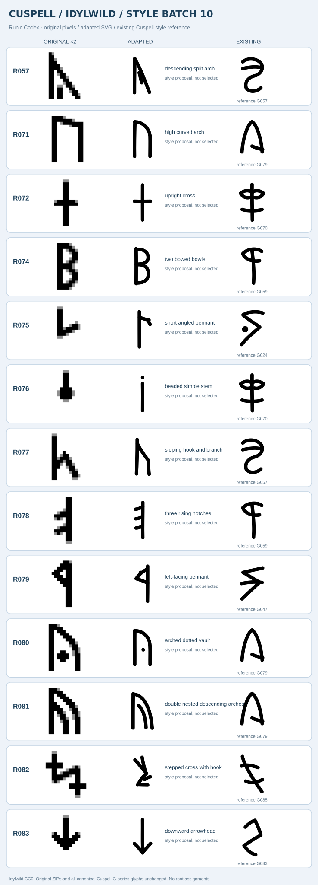
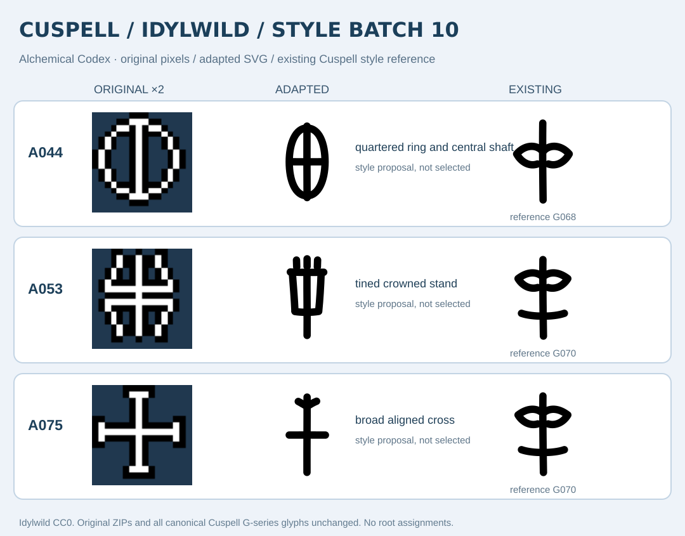

Each row: unchanged source pixels, new editable Cuspell-style candidate, untouched Cuspell reference. References convey style, not approved semantics or replacements.
Runic Codex (13)

Alchemical Codex (3)

Idylwild originals archived unchanged. 160 of 299 borrowed source IDs styled; no canonical registry changes.